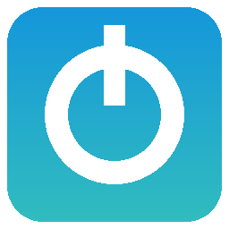

WiiThemer Desktop
Build custom Wii System Menu themes on Windows, macOS and Linux, with every setting yours to change.
How it works
Same steps as wiithemer.org: pick a theme, pick your System Menu version (4.0 to 4.3), pick your region (U, E, J, K), pick a channel spin, then build. The app makes a .csm file you install with a theme installer on a softmodded Wii. Always keep a NAND backup and Priiloader.
What you can change: theme source (catalog, a local .mym, or any URL), the theme catalog itself, the spin mod, the output file name, the exact themewii build commands, extra System Menu versions, the tools and Wine command, plus colors, fonts and layout. There's also a built-in .mym editor and a raw JSON editor for every setting.
Features
- All the platforms: Windows, macOS (Apple Silicon and Intel), Linux (x86_64 and ARM64)
- 73 built-in themes plus your own .mym files, themes from links, or whole folders
- Gallery of thumbnails, plus search, sorting, favorites, notes and a Random button
- Batch builds: many themes for many versions and regions in one go
- Wii profiles for each console in the house
- MYM Editor: open, edit and create theme mods
- Customize everything: colors, presets, fonts, layout, tab order, file names, the build steps, the tools, the catalog
- Languages: English, Español, Français, Deutsch, Português, and you can reword any text
- Safety checks: file size warnings, SHA-256 checksums, and a "Test tools" button
- History of builds, update notifications, menus and keyboard shortcuts, and a command-line mode
Read the full guide · SHA256SUMS.txt · Changelog